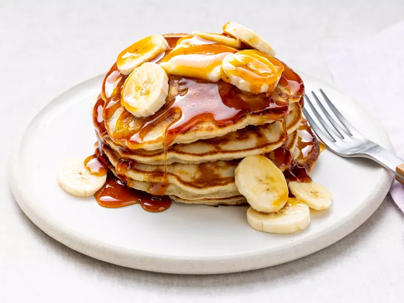

Banana Pancakes

Why Banana Pancakes?
Crowd-pleasing banana pancakes made from scratch that are ready in minutes. A fun twist on ordinary pancakes.
Ingredients
- cup all-purpose flour
- 1 tablespoon white sugar
- 2 teaspoons baking powder
- ¼ teaspoon salt
- 1 cup milk/li>
- 2 tablespoons vegetable oil
- 1 ½ teaspoons baking powder
- 2 ripe bananas, mashed
Steps
- Gather all ingredients.
- Combine flour, white sugar, baking powder, and salt in a bowl. Mix together egg, milk, vegetable oil, and bananas in a second bowl.
- Stir flour mixture into banana mixture; batter will be slightly lumpy.